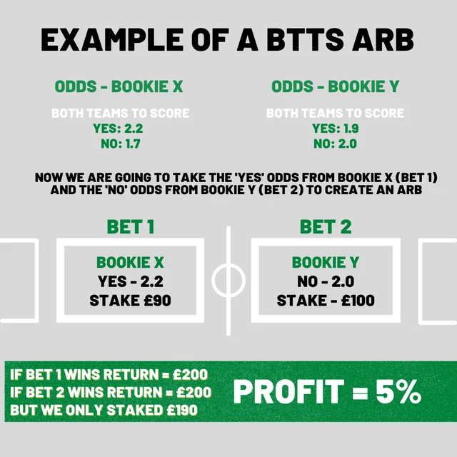
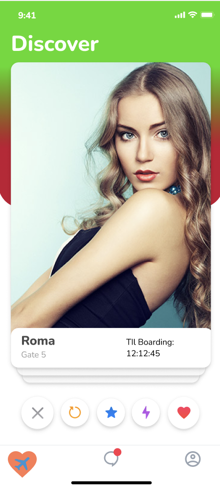
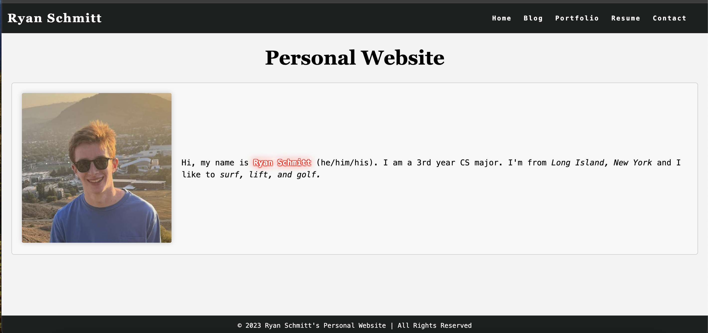

Portfolio
Wealth Path
Managing personal finances is tedious when transactions need manual categorization and there's no easy way to ask plain-English questions about your spending. Wealth Path automates categorization with AI and lets users query their financial data conversationally.
Shipped a working finance app with AI-powered transaction categorization and an LLM chat interface for natural language questions about spending habits and financial goals.
Digital Transformation AI Hackathon
City clerks spend hours manually searching disparate document systems to fulfill public records requests. This AI-powered search tool ingests, vectorizes, and semantically queries thousands of public records — reducing retrieval from minutes to seconds.
Won 1st place out of all competing teams; the tool demonstrated a complete data pipeline from S3 ingestion through Bedrock vectorization to OpenSearch semantic retrieval.

Arbitrage Betting Software
Sports bettors have no fast way to identify guaranteed-profit arbitrage opportunities across multiple sportsbooks in real time. This tool scrapes live odds and surfaces bets where the combined implied probabilities across books fall below 100%.
Automated detection of arbitrage opportunities across 5+ sportsbooks, surfacing bets with 2–8% guaranteed return when opportunities are present.

Mile High Matches
Airports are high-stress, impersonal environments — there's no easy way to meet other travelers with shared routes or interests. Mile High Matches is a cross-platform dating app built specifically for airport connections.
Shipped a cross-platform mobile app with user authentication, profile creation, and real-time match notifications on both iOS and Android via Flutter.

Personal Portfolio
A fast, zero-dependency personal site that showcases projects and work history without relying on heavy frameworks or a build pipeline — deployable instantly via GitHub Pages.
Live site deployed on GitHub Pages, serving as the canonical home for work history, projects, and contact information.